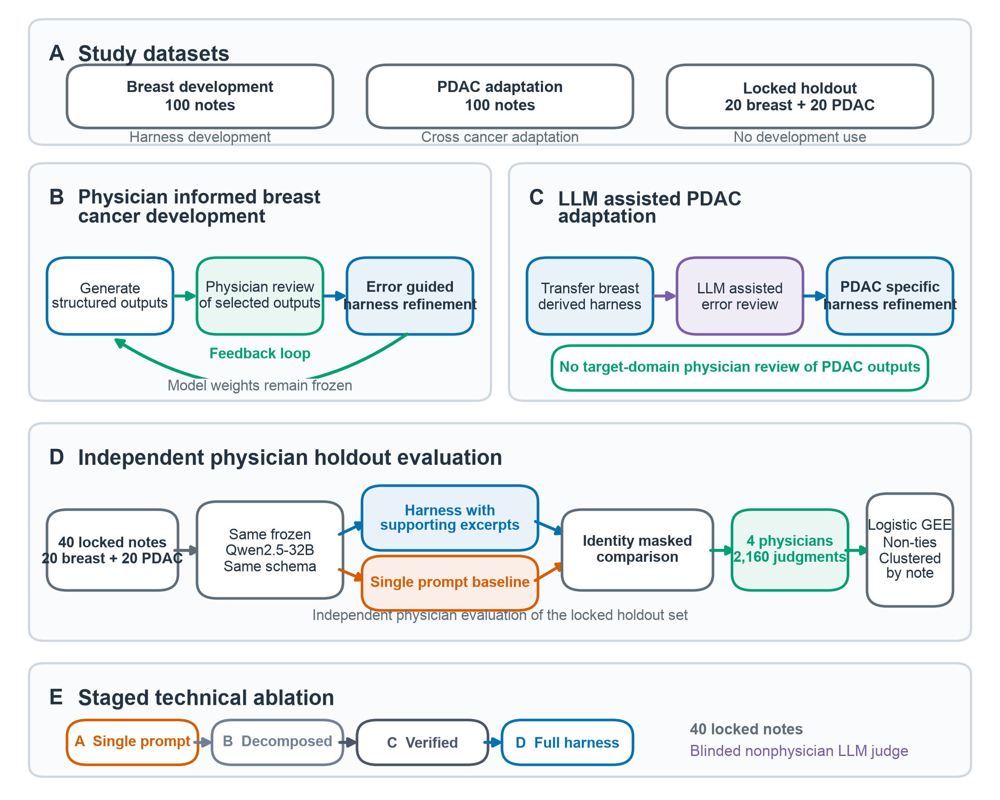
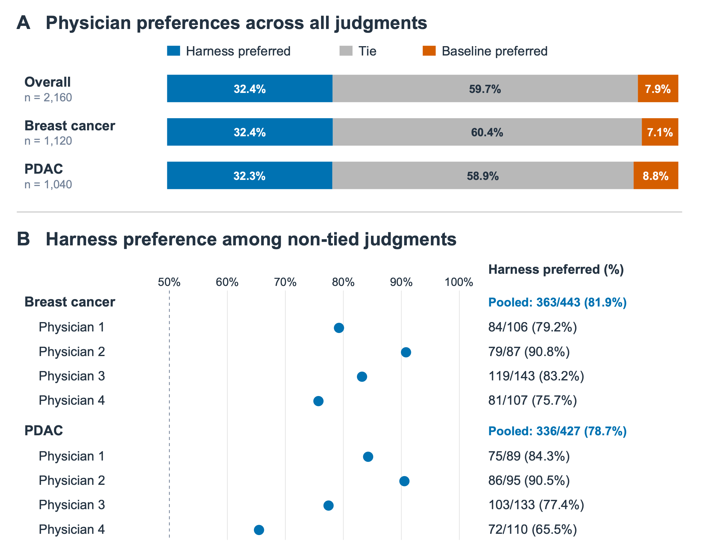

Physician-authored manuscript draft
English working manuscript · Version 2.2.0 · November 18, 2026
Version history
v2.2.0 · Physician SVG layout authority · 2026-11-18
Used the physician SVGs as the authoritative layouts and applied only shared colors, fonts, and export metadata.
v2.1.1 · Mobile figure readability · 2026-11-17
Corrected Figure 2 label clipping and added contained horizontal scrolling for figures on small screens.
v2.1.0 · Physician figure integration · 2026-11-17
Integrated the physician author's figure structures and harmonized all six figures with one reproducible visual system.
v2.0.1 · Author review tooltips · 2026-11-09
Underlined phrases now show reasons and suggested revisions on hover/focus.
v2.0 · Physician prose authority · 2026-11-08
The latest doctor Word draft is now the prose authority. The current HTML retains the technical figures, tables, captions, numbering, cross references, citations, supplement, and layout. Underlined phrases require author review.
v1.8.1 · Discussion wording · 2026-11-01
Removed a repeated findings suggest construction from the note level interpretation moved to P109. No other manuscript wording, data, tables, figures, or captions changed.
v1.8.0 · Physician source first Results · 2026-11-01
Reorganized the physician authored Results under five descriptive headings, removed repeated summary sentences, added the staged technical ablation results, and moved one note level interpretation to the Discussion. The canonical physician source, tables, figures, captions, and data are unchanged.
v1.7.0 · Figure S2 redesign · 2026-11-01
Redrew Supplementary Figure S2 to show the cumulative A through D configurations, the change introduced at each transition, and three equally formatted adjacent comparisons. Manuscript text and the figure caption are unchanged.
v1.6.9 · Temporal control description · 2026-11-01
Revised P115 to describe the prompt, structured context, semantic and source support checks, and the limit on attributing physician preference to temporal controls alone. Comment 13 is resolved.
v1.6.8 · Evaluation limitation · 2026-11-01
Removed the separate Limitations heading and clarified that the observed physician preference applies to the complete outputs as presented. The revised text separates the observed direction from uncertainty in effect size and causal attribution.
v1.6.7 · Limitations presentation · 2026-11-01
Added a main manuscript Limitations heading and highlighted only five approved P119 design limitation phrases for focused review. The limitation text is unchanged.
v1.6.6 · Comment 14 resolution · 2026-11-01
Closed physician Comment 14 after verifying breast ER, PR, and HER2 rules in the prompt, breast-only routing, hooks, and tests. Comment 13 remains open.
v1.6.5 · Approved evaluation limitations · 2026-11-01
Restored five user approved evaluation design limitations in P119 without changing the remaining physician prose or adding review highlights.
v1.6.4 · Canonical Results wording · 2026-11-01
Restored the canonical Results confidence interval wording with only hyphen normalization and restored the canonical capitalization of the clinical extraction fields heading.
v1.6.3 · Results and Discussion section revert · 2026-11-01
Reset Results and Discussion physician prose to the canonical Word draft for physician review. Retained only approved terminology, numbers, cross references, citations, comment anchors, and independently labeled technical result inserts.
v1.6.2 · Adjacent focus correction · 2026-11-01
Removed the adjacent second focus phrase in the system identity sentence and added a DOM aware check that rejects adjacent focus spans when their combined visual coverage forms a complete sentence.
v1.6.1 · Literature framing · 2026-10-31
Separated the Huang and Hein study descriptions to preserve their distinct methods, narrowed five complete sentence highlights to short review phrases, and retained the 24 browser comment revisions without changing Results.
v1.6 · Browser comments · 2026-10-31
Resolved 24 browser review comments. Reworked the Introduction and Study Design, clarified the holdout, baseline, plan branch, evaluation interface, and ablation judge, replaced broad revision coloring with a small set of manual focus phrases, and completed a language audit for unnecessary hyphens and colons.
v1.5.2 · Word level review · 2026-10-31
Replaced whole-block yellow review backgrounds with token-level highlights. Only inserted or replaced words and selected key phrases in wholly new passages are colored; manuscript wording, statistics, links, numbering, and comments are unchanged.
v1.5.1 · 2026-10-31
Added light, medium, and strong review highlights to show the importance of the 44 wording changes already identified against v1.3. Manuscript wording and Results are unchanged; deletions remain in the version diff.
v1.5 · 2026-10-31
Clarified the five-paragraph Introduction and added a complete block-level redline against the v1.3 visible manuscript, including the revised ablation discussion. Every visible manuscript block with changed wording is highlighted; deletions are recorded in the version diff.
v1.4.1 · 2026-10-31
Simplified the A/B interface and ablation-study wording, defined the ablation purpose as examining output-quality changes across successive harness configurations, and aligned the baseline condition with the application-level inference-request definition.
v1.4 · 2026-10-31
Reorganized the five-paragraph Introduction while retaining the physician's language, clarified the two-stage Methods and holdout design, moved gate and interface details to Supplementary Methods, and added the corresponding evaluation limitation.
v1.3 · 2026-10-30
Applied conservative grammar and punctuation edits, added direct verified author-year citations, retained two outstanding physician comments, and highlighted three new methods or limitation clarifications for review.
v1.2.3 · 2026-10-27
Removed the empty trailing WebKit export page by ending capture at the last printable manuscript element, and added explicit failure cleanup with a post-write fault-injection test.
v1.2.2 · 2026-10-27
Replaced the supplementary native disclosure with an accessible custom fold so print media always contains the complete supplement, and added safe-boundary pagination preparation for bounded WebKit PDF verification.
v1.2.1 · 2026-10-27
Restricted print output to the clean manuscript and formal supplement, excluded author-only workspaces and comments from print, and added bounded WebKit print regression coverage.
v1.2 · 2026-10-26
Converted the review draft into a clean manuscript view, made the main tables sequential, corrected all approved table and figure cross-references, retained the 12 Word comments in a neutral end section, and restored the 26-entry author literature-review workspace.
v1.1 · 2026-10-26
Removed the draft-information panel, consolidated six open author queries with bidirectional review links, retained only the approved note-distribution panel in Supplementary Figure S1, and made each version-history entry independently collapsible.
v1.0 · 2026-10-26
Replaced the prior bilingual draft with an English-only rendering of the physician Word manuscript as the sole prose source, added exact source-preservation checks, split the cancer-specific result tables, and rebuilt the main and supplementary figure set.
v0.25 · 2026-10-13
Added the leave-one-physician-out GEE sensitivity analysis and its supplementary table.
v0.24 · 2026-10-12
Restored the physician-authored point that fluent outputs can conceal extraction errors.
v0.23 · 2026-10-12
Made manuscript sections collapsible, added anchor-driven disclosure opening, and preserved complete print output.
v0.22 · 2026-10-11
Consolidated the main result figures and moved the fully labeled note-level result to the supplement.
v0.21 · 2026-10-11
Clarified the staged ablation, standardized figure color semantics, and changed the adjusted-effect display to probability scale.
v0.20 · 2026-10-11
Added probability-scale adjusted effects alongside the odds-ratio results.
v0.19 · 2026-10-11
Redrew the figure set in a common visual system and consolidated the judge protocol.
v0.18 · 2026-10-10
Integrated four physicians across two cancer types and revised the study framing around extraction rather than letter generation.
v0.17 · Date not recorded
Established the first tracked multi-physician analysis and ablation-study draft.
Introduction
Large language models (LLMs) are increasingly used for clinical documentation, patient communication, and administrative tasks. Many of these applications depend on identifying relevant information in electronic health record (EHR) notes before those facts can be summarized, analyzed, or used in another task. Reliable extraction from those notes is therefore an important step for many uses of LLMs in oncology care and research. This study focuses on that extraction task.
It is estimated that 80% of clinical data in EHR exist in unstructured form (Kong, 2019), with a large proportion of clinically relevant information encoded in free-text narratives (Wiest et al., 2024). Oncology notes are particularly challenging because a patient can have a complex medical history that contains multiple diagnoses, prior and future treatments, and changes in disease status. Key information may be distributed across different sections, expressed with uncertainty, linked through complex timelines, or even documented incorrectly. As commonly seen in real-world practice, laboratory, imaging, and genomic results copied from earlier notes lengthen notes and further complicate the extraction task. A study of outpatient documentation across a decade found that notes became longer and more redundant, with much of the increase attributable to templates or copied and pasted text (Rule et al., 2021). LLMs must therefore not only identify the relevant information, but also determine its relationship to the patient’s current diseases.
LLMs can extract information from clinical notes, but their outputs can vary. They may omit details, confuse past findings with current findings, or add information that is not supported by the original note (Sushil et al., 2024; Huang et al., 2024). A reviewer may be able to identify these errors, but checking every field in every output can approach the cost of manual extraction. Commercial models perform better on some clinical extraction tasks, but sending protected health information (PHI) to externally hosted services raises privacy and governance concerns, including HIPAA compliance (Huang et al., 2024; Wiest et al., 2024). Local deployment avoids external transfer of PHI, but local models can still produce unstable or incorrect extractions (Wiest et al., 2024). A useful clinical workflow must therefore improve reliability without depending on external processing or case by case manual review.
How an LLM is used may be as important as the model itself. Additional training can adapt model weights to a clinical task. When the weights are unchanged, prompt design, task decomposition, verification, and clinical rules can organize the extraction process. Huang et al. iteratively refined prompts on expert curated lung pathology data and later applied the same prompt engineering strategy to osteosarcoma reports. Hein et al. used a human in the loop process to refine prompts, output schemas, and an error ontology, then applied the resulting templates to breast and prostate pathology reports (Huang et al., 2024; Hein et al., 2025). These studies focused on pathology reports and prompt or schema refinement. It remains unclear whether ↩.
To address this gap, we built a locally deployable inference harness around a frozen LLM for extracting information from real-world unstructured oncology notes. The harness divides extraction into smaller tasks and applies checks and clinical rules without changing the model weights. We developed the breast cancer harness with physician input. We then adapted it to pancreatic ductal adenocarcinoma (PDAC) notes using LLM-assisted review and regression tests without physician review of the PDAC development outputs. Four physicians compared the final harness with a ↩ that used the same model. Our results showed that the output from the harness was favored over that from a ↩.
Methods
Study Design
The study comprised two development stages followed by an independent physician evaluation. In Stage 1, a physician and an investigator developed the breast cancer inference harness through review of selected outputs. In Stage 2, the investigator adapted the harness to pancreatic ductal adenocarcinoma (PDAC) using LLM review and regression tests, without physician review of the PDAC development outputs (Figure 1A-C). Four physicians then compared the final systems on an untouched holdout set.
The final harness was compared with a ↩ using the same frozen model and field schema on an untouched holdout set of 40 CORAL notes annotated by experts. The set included 20 breast cancer notes and 20 PDAC notes. Four physicians completed evaluations for each field across both cancer types. System identities were not disclosed.
We separately conducted an ablation study of four cumulative harness configurations using an OpenAI LLM judge (Figure 1D; Table 2).
Dataset
We used CORAL, a PhysioNet dataset of deidentified medical oncology notes obtained from the University of California, San Francisco. The development process used 100 unannotated breast cancer notes and 100 unannotated pancreatic cancer notes. A separate untouched holdout set of 40 notes annotated by experts consisted of 20 breast cancer notes and 20 PDAC notes. The holdout note texts were not used for development. The annotations were not provided to the model or used during development, and they were not used to calculate the primary endpoint based on physician preference. They were not shown to the physicians in the evaluation interface.
Baseline model and model development
We used Qwen2.5-32B-Instruct-AWQ served locally through vLLM. The baseline used the complete note and all extraction questions in one prompt and requested the full target schema in one response. Each note was processed in one chat completion request. This describes the application-level request and does not make a claim about internal server execution or forward passes. In the physician review, the baseline and harness used the same field definitions and output contract.
Inference Harness
The harness extracted clinical information in multiple steps because different fields required different clinical context, reasoning, processing, and validation. It first used regular expressions to identify the Assessment and Plan section for fields related to the plan. If this step failed, the model made up to three attempts to locate and reproduce the relevant text, and each attempt was checked against the original note. If all attempts failed, the harness skipped only the plan branch and continued extraction from the complete note. Separate prompts for each field identified the visit context, cancer diagnosis, laboratory results, objective findings, active medications, and recent treatment changes. Information extracted in earlier steps then guided dependent assessments. For example, cancer stage and metastatic status provided context for treatment intent, while current therapy and clinical findings provided context for treatment response. The plan branch used text from the Assessment and Plan section that was supported by the source note. Prompts instructed the model to leave a field empty when the note did not provide sufficient evidence.
Outputs passed through structural checks for JSON and schema validity, followed by checks for specificity, semantic alignment, accuracy and support from the original note, and temporal consistency. Deterministic clinical rules and processing across fields were then applied to repeated extraction errors. Source attribution was added when enabled. See Table 1. Operational definitions and order are provided in Supplementary Methods.
We included clinical rules to address repeated extraction errors. For example, these rules helped the system distinguish regional lymph node involvement from distant metastases, suspected metastatic disease from confirmed metastatic disease, and active anticancer treatment from supportive or home medications. They also prevented disease changes documented before treatment initiation from being misclassified as a treatment response. The system returned supporting excerpts from the original clinical note when available.
Table 1. Inference harness components
| Harness component | Failure mode addressed | Example |
|---|---|---|
| Extraction with separate prompts for each field | Extracting multiple fields in a single prompt may lead to missing or mixed information | Separate current medication from previous and future treatment plans. |
| Context that accounts for dependencies | Related fields contradict one another | Use metastatic status when interpreting stage and response |
| Semantic verification | The model returns medically related answers that do not address the target question | Remove a future treatment plan from current response |
| Faithfulness trimming | The model infers a conclusion that is not supported by the note | Keep a lesion classified as suspected rather than label it as confirmed when a biopsy is pending |
| Temporal filtering | Confusion among past, current, and future information. | Remove a completed scan from the imaging plan |
| Drug and context rules | A medication may be misclassified when its clinical role is unclear from the drug name alone | Separate anticancer drugs from home and supportive medications |
| Clinical rules across fields | Stage, nodes, and distant disease become inconsistent | Keep axillary nodes regional rather than distant |
| Source attribution | A reviewer cannot trace an extracted value | Return the supporting sentence from the note |
![Development and adaptation workflow]()

Breast cancer development with physician review
Breast cancer development used all 100 development notes. Early and targeted iterations used smaller subsets to shorten the feedback cycle, while major and final runs covered all 100 notes to detect less frequent errors and check for regression. A physician reviewed selected outputs, and the investigators compared flagged outputs with the complete source note, grouped repeated errors, and translated them into general changes to prompts, verification logic, or deterministic rules. These changes were retained only after testing on affected examples. The objective was to encode repeated clinical distinctions rather than corrections for individual cases. For example, an error in which axillary nodal disease was classified as distant metastasis motivated a general rule for regional nodes. An error in which a planned drug was listed as active therapy motivated a temporal medication rule. This process did not produce a conventional supervised training set, and the model weights were not updated.
PDAC adaptation with feedback from language models
The harness developed from breast cancer notes was further adapted to pancreatic ductal adenocarcinoma using 100 additional pancreatic cancer notes. No physician reviewed pancreatic cancer outputs during this stage. ChatGPT organized the clinical error categories and clinical distinctions established during breast cancer development into a structured review rubric. The Qwen pipeline generated structured outputs, and a Qwen reviewer guided by the rubric compared them with the complete pancreatic source notes and flagged potential errors. Investigators assessed the flags, implemented selected revisions to prompts, clinical rules, or workflow logic, and retained changes only after regression testing.
The adaptation retained the core framework while introducing modifications specific to pancreatic cancer, particularly for disease terminology, treatment regimens, and rules applied after extraction. The framework preserved its core approach to error detection and correction while accommodating differences between the two cancer types.
Clinical evaluation data collection and scoring rubric
The clinical evaluation presented the source note and two structured outputs through an A/B test interface. Four physicians selected A better, B better, or tie for each field. The physician who participated in Stage 1 development was not one of the four physicians. System identities were not disclosed. Source attribution was available only with the harness output when present, so physicians compared the full output packages rather than source attribution alone. Before evaluating the holdout set, the authors designated seven core fields as clinically important for understanding disease status and current management. Details of the interface are provided in Supplementary Methods. See Supplementary Table S1.
Ablation study
We conducted an ablation study on the same 20 breast cancer and 20 pancreatic cancer holdout notes to examine how output quality changed across successive harness configurations. All four conditions used Qwen2.5-32B-Instruct-AWQ, greedy decoding, and the same output contract with 31 fields. Attribution, tool calling, and letter generation were disabled.
See Table 2 for the 4 conditions.
Table 2. Ablation study conditions
| A | A single-prompt baseline with one inference request per note. |
|---|---|
| B | Decomposed extraction with separate prompts for each field, routing across fields, bounded Assessment and Plan retry, and the shared format and schema safeguards. |
| C | Condition B plus the semantic, faithfulness, and temporal verification gates. |
| D | Condition C plus deterministic inline processing and the complete POST hook layer used by the full inference harness. |
We compared adjacent configurations (A vs B, B vs C, and C vs D), yielding 120 paired comparisons across 40 notes. A single OpenAI LLM judge received only the source note and the two outputs for each adjacent configuration pair. The judge had no access to the project code, development history, prior evaluations, or configuration identities. It was instructed to prioritize accuracy and support from the original note, then completeness, and to use TIE when differences were minor or offsetting. We compared adjacent configurations using two sided exact sign tests, excluding ties. Details of the judge model and settings are provided in Supplementary Methods.
Statistical analysis
For the physician evaluation, interrater agreement was assessed pairwise using exact agreement and Cohen’s κ for each physician pair. Results from the 8 completed physician-by-cancer evaluations were summarized separately. Pooled counts were reported descriptively and were not treated as independent field-level observations.
For the primary inferential analysis, tied comparisons were excluded, and each remaining directional judgment was coded according to whether it favored the harness or the baseline. We fit a ↩ ↩. Evaluator was included as a fixed effect, and cancer type was additionally included in the overall model. Cancer-specific models adjusted for evaluator.
The primary outcome was the adjusted probability of harness preference among directional judgments. Predicted probabilities were standardized over the observed covariate distribution, and 95% confidence intervals (CIs) were calculated using the delta method on the logit scale. Adjusted odds ratios (ORs) were reported as secondary measures.
For sensitivity analyses, we refitted the overall model four times after excluding one physician at a time. We also retained tied judgments by coding harness, tie, and baseline preferences as 1, 0, and −1, respectively, and calculated the mean net preference margin with 95% CIs using sandwich standard errors clustered by note. Finally, we aggregated preferences for each field within each note and performed an exact two-sided sign test comparing positive and negative margins by note.
Exploratory analysis of core fields used one joint population averaged logistic GEE on 495 directional judgments. Field, physician, and cancer type were fixed effects. Repeated judgments were clustered by note with an exchangeable working correlation. Probabilities for each field were standardized over the physician and cancer distribution observed for that field. Breast type and receptor status applied only to breast cancer notes. Ties were excluded. These estimates describe preference rather than accuracy, and no pairwise field tests or multiplicity claims were made.
Results
All four physicians evaluated both cancer types. Across 2,160 required judgments for each note and field, the harness was preferred 699 times, 1,290 comparisons were ties, and the baseline was preferred 171 times. See Table 3, Table 4, and Figure 2. These correspond to 32.36%, 59.72%, and 7.92% of all judgments. Among the 870 directional judgments, the crude harness share was 80.34% (note cluster robust 95% CI 76.14% to 83.96%). The unadjusted harness share among directional judgments ranged from 65.5% to 90.8% across the eight physician-by-cancer groups (Figure 2B).
Table 3. Physician preferences for breast cancer extraction
| Physician | Required judgments | Harness | Baseline | Tie | Harness share among directional judgments |
|---|---|---|---|---|---|
| 01 | 280 | 84 | 22 | 174 | 79.2% |
| 02 | 280 | 79 | 8 | 193 | 90.8% |
| 03 | 280 | 119 | 24 | 137 | 83.2% |
| 04 | 280 | 81 | 26 | 173 | 75.7% |
| All | 1,120 | 363 | 80 | 677 | 81.9% |
Table 4. Physician preferences for PDAC extraction
| Physician | Required judgments | Harness | Baseline | Tie | Harness share among directional judgments |
|---|---|---|---|---|---|
| 01 | 260 | 75 | 14 | 171 | 84.3% |
| 02 | 260 | 86 | 9 | 165 | 90.5% |
| 03 | 260 | 103 | 30 | 127 | 77.4% |
| 04 | 260 | 72 | 38 | 150 | 65.5% |
| All | 1,040 | 336 | 91 | 613 | 78.7% |
For breast cancer notes, all four physicians independently favored the harness on the breast cancer set. Their pooled breast result was 363 harness preferences, 80 baseline preferences, and 677 ties. The first physician's result by note was 18 harness wins, one baseline win, and one tie. The second and third physicians each recorded a harness win in all 20 notes. The fourth recorded 16 harness wins, two baseline wins, and two ties. When the four breast evaluations were combined within each note, all 20 notes had a positive difference between harness and baseline preferences (Supplementary Figure S1).
For pancreatic cancer notes, the evaluations produced 336 harness preferences, 91 baseline preferences, and 613 ties. The harness had a positive pooled margin in 19 pancreatic notes and a negative margin in one.
![Physician preferences across all judgments]()

The adjusted probability of a harness preference among directional judgments was 79.98% (95% CI 75.75% to 83.63%). The breast cancer estimate was 81.66% (95% CI, 76.02% to 86.21%), the pancreatic cancer estimate was 78.15% (95% CI, 71.47% to 83.62%). The same standardized estimates on the odds scale were 3.995 overall (95% CI, 3.12 to 5.11; ↩), 4.45 for breast cancer (95% CI, 3.17 to 6.25; ↩), and 3.576 for pancreatic cancer (95% CI, 2.51 to 5.11; ↩). See Table 5.
Table 5. Adjusted probability of inference harness preference among directional judgments
| Scope | Directional judgments | Harness | Baseline | Note clusters | Adjusted probability (95% CI) | Adjusted odds ratio (95% CI) | P value |
|---|---|---|---|---|---|---|---|
| Overall | 870 | 699 | 171 | 40 | 79.98% (75.75%-83.63%) | 3.995 (3.124-5.110) | 2.67e-28 |
| Breast cancer | 443 | 363 | 80 | 20 | 81.66% (76.02%-86.21%) | 4.452 (3.169-6.253) | 7.04e-18 |
| PDAC | 427 | 336 | 91 | 20 | 78.15% (71.47%-83.62%) | 3.576 (2.505-5.105) | 2.30e-12 |
Sensitivity and physician agreement
Sensitivity analyses supported the primary findings. When ties were included, the net preference margin favored the harness (+24.4 percentage points; 95% CI, +20.4 to +28.5). At the note level, the harness was preferred in 39 of 40 cases (97.5%). When each physician was excluded individually, adjusted probabilities of harness preference ranged from 77.08% to 83.53% (Supplementary Table S3).
Pairwise exact agreement ranged from 73.1% to 82.9%, with Cohen's kappa ranging from 0.511 to 0.646 (Figure 3 and Supplementary Table S2).
![Agreement among physicians]()

Performance across Clinical Extraction Fields
We examined physician preferences across the seven prespecified clinical extraction fields. In all the 1,040 evaluations, physicians preferred the harness in 418 comparisons (40.2%), the baseline in 77 (7.4%), and 545 (52.4%) were ties. When ties were excluded, 84.4% favored the harness. The harness was preferred more often than the baseline across all 7 fields, with the largest difference seen in identifying active anticancer medications (132 vs 3). Differences were smaller for distant metastasis and breast cancer type and receptor status, where ties were more common (Figure 4). The adjusted point estimate exceeded 50% for each field; the 95% CI for breast cancer type and receptor status included 50% (62.4%; 95% CI, 38.6% to 81.5%) (Figure 4C).
![Physician preference by core oncology field]()

We also analyzed physician preferences for each individual note to determine whether the overall advantage was consistent across cases. After combining physician ratings for each note, the harness was preferred in all 20 breast cancer notes and 19 of 20 pancreatic cancer notes. The overall ratings also favored the harness in each physician-by-cancer group. These findings were consistent with the primary analysis and suggest that the observed advantage was not driven by a small number of clinical notes (Supplementary Figure S1).
Technical ablation
A separate technical ablation comprised 120 adjacent comparisons across the same 40 notes. A single nonphysician LLM judge, blinded to configuration identity, evaluated the comparisons. The four configurations are defined in Table 2. The A to B comparison yielded 17 preferences for each configuration and 6 ties (P = 1.000). The B to C comparison yielded 24 preferences for verified extraction and 2 for decomposed extraction, with 14 ties (P = 1.05 × 10⁻⁵). The C to D comparison yielded 19 preferences for verified extraction and 16 for the full harness, with 5 ties (P = .736). The three unadjusted two sided exact sign tests excluded ties. See Supplementary Figure S2 for the full roadmap.
Discussion
In this study, the inference harness was preferred over a ↩ using the same underlying LLM. This advantage was observed in both breast and pancreatic cancer and remained consistent in sensitivity analyses. These findings suggest that a structured inference harness can ↩ without additional model training. The note level results also indicate that the observed preference was not driven by a small number of clinical notes.
Structured extraction can convert long, complex, free-text notes into a compact set of fields that can be checked, searched, and reused downstream. In oncology, this is useful as clinical notes can be complex and contain multiple diagnoses, prior and future treatments, and changes in disease status. Prior studies have demonstrated the potential of LLMs for extracting structured information from clinical notes. However, the CORAL study showed that advanced, commercialized models could have omissions or could generate unsupported findings (Sushil et al., 2024). Huang et al. (2024) demonstrated that iterative prompt engineering with ChatGPT using an API could improve extraction of free-text pathology notes. Similarly, Hein et al. (2025) showed that iterative refinement guided by physicians and systematic error analysis could improve structured extraction and could be adapted to other cancer types.
Our study built on these studies by using physician feedback to identify recurring errors and develop clinical rules during breast cancer note development. Rather than producing a large, supervised training set, we used the feedback to develop prompts for each field, verification steps, and clinical rules. This approach incorporated physician knowledge into the inference harness for reuse in subsequent extraction tasks. Instead of asking physicians to perform iterative evaluation, we used ChatGPT to organize the established criteria from breast cancer development, and used Qwen2.5-32B as a judge. ↩ has been reported in prior studies, which showed high concordance on text-comparison rubrics such as faithfulness and completeness (Gershon et al., 2026; Williams et al., 2026). The final harness was preferred over the baseline by independent physicians in pancreatic cancer. This finding suggests that criteria established through physician feedback may be transferable to other cancer types and may reduce the need for repeated physician review during development.
One recurring challenge we identified was the interpretation of temporal relationships in oncology notes, as reported by prior studies (Kruse et al., 2025; Kougia et al., 2024). Although the LLM could identify treatment responses documented in the clinical history, it sometimes failed to associate them with the correct disease status. For example, a response to a previous treatment could be incorrectly attributed to the current regimen. This was particularly important for patients who had received multiple lines of therapy, where each treatment response must be associated with treatment history. To reduce this risk, we first revised the prompt to instruct the model to distinguish evidence recorded before and after a regimen change. Beyond the prompt, the response extraction step used the complete note together with structured context on current medications and recent treatment changes. The extracted response then underwent semantic and source support checks. These temporal controls were embedded across the prompt, structured context, and downstream checks, which made their independent contribution difficult to isolate. The physician ratings therefore support the complete workflow but do not determine how much of the observed preference came from the temporal controls alone.
Our ablation analysis suggested that verification was an important component of the inference harness (Supplementary Figure S2). Adding decomposed extraction alone did not produce an overall improvement while adding layers of verification gates resulted in significantly more favorable evaluations. Additionally, we found that ↩. This suggests that restrictive rules that performed well in one cancer type may not improve performance in another. More restrictive rules may introduce tradeoffs, especially when the terminology or treatment differs between cancer types. For example, ↩, which are used to classify breast cancer subtypes but are not applicable to PDAC.
This study has several limitations. First, our primary outcome was physician preference rather than absolute extraction accuracy. A tie could indicate that both systems produced acceptable outputs or that both contained errors. Although physician ratings consistently favored the harness, the evaluation included only four physicians and 40 clinical notes from two cancer types within a dataset from a single source. It is worth noting that these notes were real clinical notes rather than synthetic cases or narratives generated by models. They contain repeated information copied from earlier notes, uncertain findings, treatment plans, or even typographical errors that make the extraction task challenging. Nevertheless, further studies are needed to investigate whether the results can be generalized to other cancer types or language models. The observed preference consistently favored the complete harness output as presented in both cancer types and sensitivity analyses. The current design cannot separate the effects of extraction quality, the surrounding workflow, source attribution, and display position. Second, the exploratory ablation was evaluated by a single LLM judge that was not a physician and compared cumulative stages rather than individual components. Therefore, it could not determine the independent contribution of each verification step or clinical rule. Future studies should evaluate extraction accuracy against expert reference standards, include larger and more diverse clinical datasets, and assess the generalizability of the harness across different open-weight models.
Supplementary Methods
Data access and holdout definition
CORAL access is governed by the PhysioNet credentialing and data use process specified by the dataset authors. The 40 holdout note texts and their existing expert annotations were excluded from development, error analysis, prompt revision, rule development, and regression testing before the final harness was frozen. The annotations were not provided to the models, not used during harness development, and not used to calculate the primary physician preference endpoint. They were not shown in the evaluation interface.
Assessment and Plan identification
The harness first used regular expressions to locate the Assessment and Plan section. If no section was found, the model made up to three attempts to reproduce the relevant source text. Each candidate was checked against the original note. If all attempts failed, the harness skipped only the plan branch and continued extraction from the complete note.
Verification and postprocessing order
Each model output for a field passed through the following gates in order.
- Gate 1 repaired JSON formatting only when parsing failed.
- Gate 2 checked the output schema and repaired incorrect or leaked keys.
- Gate 3 checked specificity and semantic alignment for vague answers or answers that did not address the task.
- Gate 4 trimmed clearly unsupported or contradictory content while retaining supported information.
- Gate 5 removed completed or historical events from fields for future plans.
After the gates, deterministic filters for each field and clinical hooks across fields addressed repeated errors. Source attribution followed processing after extraction when enabled.
Insufficient source information
A hypothetical note may contain imaging findings or other clinical details associated with advanced disease but still lack enough confirmed information supported by the source to assign a formal cancer stage under the extraction rules. In that case, the system returns not stated or leaves the stage field empty. This example does not describe a CORAL patient.
Model roles during PDAC adaptation
ChatGPT organized the error categories and clinical distinctions from breast cancer development into a structured review rubric. A local Qwen reviewer used that rubric to compare pipeline outputs with complete pancreatic source notes and flag potential errors. Investigators decided which changes to implement and retained them only after regression testing. Neither ChatGPT nor the Qwen reviewer served as the ablation judge.
Physician evaluation interface
Physicians were blinded to system identities. Source attribution was available only with the harness output when present. Physicians reviewed the complete output packages.
Ablation study judge
The ablation judge was Codex using model gpt-5.6-sol, reasoning effort xhigh, and service tier default. It reviewed adjacent configuration pairs and received only the source note and two outputs. ChatGPT was used only for the PDAC review rubric role described above.
Supplementary Table S1. Core fields used in the primary clinical comparison
| Core field | Applicability | Rating field | Evaluation definition |
|---|---|---|---|
| Active anticancer medications | Breast cancer and PDAC | Current_Medications.current_meds | Anticancer drugs currently being taken or administered. Supportive or home medications, completed or stopped drugs, and drugs that are only planned are excluded. |
| Stage | Breast cancer and PDAC | Cancer_Diagnosis.Stage_of_Cancer | Cancer stage, TNM, or resectability status, retaining original and current time context when both are documented. |
| Distant metastasis | Breast cancer and PDAC | Cancer_Diagnosis.Distant Metastasis | Presence, absence, sites, and certainty of distant spread; regional nodes are not counted as distant metastasis. |
| Regional or overall metastasis | Breast cancer and PDAC | Cancer_Diagnosis.Metastasis | Regional nodal and distant involvement, with the site and certainty of each supported finding. |
| Treatment response | Breast cancer and PDAC | Response_Assessment.response_assessment | Response to the current or most recently completed anticancer treatment, linked to the applicable regimen and supporting evidence. |
| Breast cancer type and receptors | Breast cancer only | Cancer_Diagnosis.Type_of_Cancer | Breast histology and the individual ER, PR, and HER2 results when documented. |
| Completed molecular or genetic results | Breast cancer and PDAC | Genetic_Testing_Results.genetic_testing_results | Completed germline, somatic, or other molecular results; pending or merely ordered tests are excluded. |
Supplementary Table S2. Pairwise exact agreement and Cohen's kappa
| Cancer | Physician pair | Shared judgments | Exact agreement | Cohen's kappa |
|---|---|---|---|---|
| Breast cancer | Physician 1 vs Physician 2 | 280 | 82.9% | 0.646 |
| Breast cancer | Physician 1 vs Physician 3 | 280 | 80.0% | 0.644 |
| Breast cancer | Physician 1 vs Physician 4 | 280 | 81.4% | 0.644 |
| Breast cancer | Physician 2 vs Physician 3 | 280 | 73.6% | 0.511 |
| Breast cancer | Physician 2 vs Physician 4 | 280 | 77.1% | 0.533 |
| Breast cancer | Physician 3 vs Physician 4 | 280 | 73.2% | 0.527 |
| PDAC | Physician 1 vs Physician 2 | 260 | 80.0% | 0.588 |
| PDAC | Physician 1 vs Physician 3 | 260 | 73.8% | 0.532 |
| PDAC | Physician 1 vs Physician 4 | 260 | 75.8% | 0.545 |
| PDAC | Physician 2 vs Physician 3 | 260 | 73.8% | 0.529 |
| PDAC | Physician 2 vs Physician 4 | 260 | 74.2% | 0.520 |
| PDAC | Physician 3 vs Physician 4 | 260 | 73.1% | 0.545 |
![Distribution of preference margins by note]()

![Ablation study]()

Supplementary Table S3. Sensitivity analysis of the overall directional GEE after excluding each physician
| Excluded physician | Directional judgments | Notes | Adjusted probability (95% CI) | Adjusted odds ratio (95% CI) | P value |
|---|---|---|---|---|---|
| Physician 01 | 675 | 40 | 79.72% (75.62%-83.28%) | 3.930 (3.101-4.981) | 1.06e-29 |
| Physician 02 | 688 | 40 | 77.08% (72.19%-81.33%) | 3.363 (2.596-4.357) | 4.12e-20 |
| Physician 03 | 594 | 40 | 80.01% (75.72%-83.70%) | 4.002 (3.119-5.136) | 1.2e-27 |
| Physician 04 | 653 | 40 | 83.53% (79.37%-87.00%) | 5.073 (3.847-6.690) | 1.22e-30 |
Outstanding physician comments (0)
Author literature-review workspace (not manuscript body)
These historical entries support drafting and discussion development; every citation and link requires pre-submission verification.
- Chen D, Alnassar SA, Avison KE, Huang RS, Raman S. Large Language Model Applications for Health Information Extraction in Oncology: Scoping Review. JMIR Cancer. 2025;11:e65984. https://doi.org/10.2196/65984Draft relevance: This review maps 24 oncology information-extraction studies and provides the broad literature frame used to limit our novelty claims.
- Sushil M, Kennedy VE, Mandair D, Miao BY, Zack T, Butte AJ. CORAL: Expert-Curated Oncology Reports to Advance Language Model Inference. NEJM AI. 2024;1(4). https://doi.org/10.1056/AIdbp2300110Draft relevance: CORAL supplies our real longitudinal breast and pancreatic oncology notes and establishes the zero-shot benchmark that our harness extends.
- Wiest IC, Ferber D, Zhu J, et al. Privacy-preserving large language models for structured medical information retrieval. npj Digital Medicine. 2024;7:257. https://www.nature.com/articles/s41746-024-01233-2Draft relevance: This study shows that locally deployed open models, prompt design, and constrained output can support privacy-preserving clinical extraction.
- Bhattarai K, Oh IY, Sierra JM, et al. Leveraging GPT-4 for identifying cancer phenotypes in electronic health records: a performance comparison between GPT-4, GPT-3.5-turbo, Flan-T5, Llama-3-8B, and spaCy's rule-based and machine learning-based methods. JAMIA Open. 2024;7(3):ooae060. https://doi.org/10.1093/jamiaopen/ooae060Draft relevance: This longitudinal lung-cancer study compares model families and rule-based methods, while our experiment holds the model fixed and changes the inference workflow.
- Tariq A, Sikha M, Kurian AW, et al. Open-Source Hybrid Large Language Model Integrated System for Extraction of Breast Cancer Treatment Pathway From Free-Text Clinical Notes. JCO Clinical Cancer Informatics. 2025;9:e2500002. https://doi.org/10.1200/CCI-25-00002Draft relevance: This large hybrid breast-cancer system has external validation and supervised fine-tuning, providing a stronger scale comparator but a different adaptation strategy.
- Dao N, Quesada L, Hassan SM, et al. Generative artificial intelligence for automated data extraction from unstructured medical text. JAMIA Open. 2025;8(5):ooaf097. https://doi.org/10.1093/jamiaopen/ooaf097Draft relevance: Its engineered preload, schema and range validation, and retry loop are the closest published architectural precedent for our verification stages.
- Zhang K, Huang T, Malin BA, et al. Introducing mCODEGPT as a zero-shot information extraction from clinical free text data tool for cancer research. Communications Medicine. 2025;5:422. https://doi.org/10.1038/s43856-025-01116-xDraft relevance: mCODEGPT shows that hierarchical prompting can outperform a single-step strategy, although it uses synthetic oncology notes and does not evaluate a full verification harness.
- Grothey B, Odenkirchen J, Brkic A, et al. Comprehensive testing of large language models for extraction of structured data in pathology. Communications Medicine. 2025;5:96. https://doi.org/10.1038/s43856-025-00808-8Draft relevance: This prostate-pathology study documents substantial effects from model, prompt, language, and quantization choices on a narrower report type.
- Qwen, Yang A, Yang B, et al. Qwen2.5 Technical Report. arXiv:2412.15115. 2025. https://arxiv.org/abs/2412.15115Draft relevance: This report documents the base model family used in both study conditions; the inference harness is our added system layer.
- Huang J, Yang DM, Rong R, et al. A critical assessment of using ChatGPT for extracting structured data from clinical notes. npj Digital Medicine. 2024;7:106. https://www.nature.com/articles/s41746-024-01079-8Draft relevance: Iterative prompt engineering achieved strong pathology extraction but still exposed specialized terminology and TNM-staging errors that motivate explicit clinical checks.
- van Koevorden JW, Aben N, Struben V, et al. Validating large language model-assisted data extraction from clinical notes. ESMO Real World Data and Digital Oncology. 2026;12:100718. https://doi.org/10.1016/j.esmorw.2026.100718Draft relevance: Six experts evaluated 29 extracted categories in head and neck oncology, making this a close clinical-validation comparator with stronger reference-based error classification than our preference study.
- Corso F, Peppoloni V, Mazzeo L, et al. Clinician expertise and prompt engineering enhance cancer information extraction in electronic health records by small language models. Communications Medicine. 2026. https://doi.org/10.1038/s43856-026-01790-5Draft relevance: This study shows that few-shot design and clinical expertise improve locally deployable models, while our work adds multi-stage verification and deterministic cross-field rules.
- Abhyankar S, Rao RM, Salehi M, Liang JJ, Deckard J, Sagiraju S. Large Language Models to Extract Cancer Staging Data From Clinical Documentation at Scale. JCO Clinical Cancer Informatics. 2026;10:e2500388. https://doi.org/10.1200/CCI-25-00388Draft relevance: This study used 700 annotated notes for model development and testing, then processed more than two million notes across five cancers; our contribution instead concerns inference-time controls across a broader schema without weight updates.
- Passweg LP, Schwenke JM, Schönenberger CM, et al. Data Extraction From Oncology Imaging Reports by Large Language Models: A Comparative Accuracy Study. JCO Clinical Cancer Informatics. 2026;10:e2600002. https://doi.org/10.1200/CCI-26-00002Draft relevance: Its senior-physician-adjudicated comparison found metastasis classification easier than treatment-response assessment, matching the field-dependent difficulty seen in our results.
- Dubey M, Chong KJ, Pun YR, et al. Prompt Engineering for Eastern Cooperative Oncology Group Status Extraction: Comparing Large Language Model Techniques. JCO Clinical Cancer Informatics. 2026;10:e2500226. https://doi.org/10.1200/CCI-25-00226Draft relevance: Its comparison of simple prompting, chain-of-thought, double filtering, and rules provides direct evidence that inference design changes oncology extraction quality even when the target is a single field.
- Zheng L, Chiang WL, Sheng Y, et al. Judging LLM-as-a-Judge with MT-Bench and Chatbot Arena. Advances in Neural Information Processing Systems. 2023;36:46595-46623. https://doi.org/10.52202/075280-2020Draft relevance: This work supports LLM judges as scalable development tools but documents position, verbosity, self-enhancement, and reasoning biases that preclude treating them as our clinical endpoint.
- Wang P, Li L, Chen L, et al. Large Language Models are not Fair Evaluators. Proceedings of the 62nd Annual Meeting of the Association for Computational Linguistics. 2024:9440-9450. https://doi.org/10.18653/v1/2024.acl-long.511Draft relevance: This paper isolates positional bias in LLM comparison judgments and reinforces the need for human final evaluation and cautious interpretation of automated review.
- Gallifant J, Afshar M, Ameen S, et al. The TRIPOD-LLM reporting guideline for studies using large language models. Nature Medicine. 2025;31:60-69. https://doi.org/10.1038/s41591-024-03425-5Draft relevance: TRIPOD-LLM supports explicit reporting of models, prompts, evaluation procedures, task-specific metrics, and human oversight in this pilot.
- Tam TYC, Sivarajkumar S, Kapoor S, et al. A framework for human evaluation of large language models in healthcare derived from literature review. npj Digital Medicine. 2024;7:258. https://doi.org/10.1038/s41746-024-01258-7Draft relevance: Its review of 142 studies and QUEST framework directly inform evaluator selection, rating dimensions, reliability assessment, and adjudication for a stronger follow-up study.
- Estevez M, Singh N, Dyson L, et al. Ensuring Reliability of Curated Electronic Health Record-Derived Data: The Validation of Accuracy for Large Language Model-/Machine Learning-Extracted Information and Data (VALID) Framework. JCO Clinical Cancer Informatics. 2026;10:e2500215. https://doi.org/10.1200/CCI-25-00215Draft relevance: VALID requires variable-level expert-reference benchmarking, internal consistency and plausibility checks, and replication, clarifying why our preference endpoint is not yet an absolute correctness assessment.
- Kong HJ. Managing Unstructured Big Data in Healthcare System. Healthcare Informatics Research. 2019;25(1):1-2. https://e-hir.org/journal/view.php?id=10.4258/hir.2019.25.1.1Draft relevance: This article supports the broad estimate that much healthcare information remains unstructured; the estimate is not oncology-specific.
- Rule A, Bedrick S, Chiang MF, Hribar MR. Length and Redundancy of Outpatient Progress Notes Across a Decade at an Academic Medical Center. JAMA Network Open. 2021;4(7):e2115334. https://pmc.ncbi.nlm.nih.gov/articles/PMC8290305/Draft relevance: This study of nearly 3 million outpatient notes documents increasing note length and redundancy and the contribution of copied and templated text.
- Hein D, Christie A, Holcomb M, et al. Iterative refinement and goal articulation to optimize large language models for clinical information extraction. npj Digital Medicine. 2025;8:301. https://www.nature.com/articles/s41746-025-01686-zDraft relevance: This study provides a close precedent for human-in-the-loop refinement, error ontology development, and general instructions rather than case-specific fixes.
- Van Veen D, Van Uden C, Blankemeier L, et al. Adapted large language models can outperform medical experts in clinical text summarization. Nature Medicine. 2024;30:1134-1142. https://doi.org/10.1038/s41591-024-02855-5Draft relevance: Its blinded reader study used a scale with an equivalent midpoint, supporting retention of ties in comparative clinical evaluation.
- Ayers JW, Poliak A, Dredze M, et al. Comparing Physician and Artificial Intelligence Chatbot Responses to Patient Questions Posted to a Public Social Media Forum. JAMA Internal Medicine. 2023;183(6):589-596. https://doi.org/10.1001/jamainternmed.2023.1838Draft relevance: This physician-rated comparison reported the preference proportion with a confidence interval, providing a clear precedent for probability-scale reporting.
- Goh E, Gallo R, Hom J, et al. Large Language Model Influence on Diagnostic Reasoning. JAMA Network Open. 2024;7(10):e2440969. https://doi.org/10.1001/jamanetworkopen.2024.40969Draft relevance: Its mixed-effects analysis included participant and case effects, illustrating how repeated clinical observations should be modeled rather than treated as independent.
- Gershon R, Ben-Shlomo Y, Yitzhaki S, et al. Large language models as judges for clinical generative AI evaluation. npj Digital Medicine. Published online September 25, 2026. doi:10.1038/s41746-026-03248-3. https://www.nature.com/articles/s41746-026-03248-3Draft relevance: This study supports rubric-specific LLM judging for faithfulness and completeness while showing weaker agreement for reasoning and safety.
- Williams G, Rutunda S, Nzabakira F, Mateen BA. Human evaluators vs. LLM-as-a-Judge: toward scalable evaluation of GenAI in global health. npj Digital Medicine. Published online July 20, 2026. doi:10.1038/s41746-026-02992-w. https://www.nature.com/articles/s41746-026-02992-wDraft relevance: This study shows that LLM-judge agreement depends on the model, rubric, language, and clinical setting and does not replace final physician evaluation.
- Kruse M, Hu S, Derby N, et al. Large Language Models with Temporal Reasoning for Longitudinal Clinical Summarization and Prediction. Findings of ACL: EMNLP 2025. 2025:20715-20735. doi:10.18653/v1/2025.findings-emnlp.1128. https://aclanthology.org/2025.findings-emnlp.1128/Draft relevance: This study supports the statement that temporal progression across long clinical records remains difficult for LLMs.
- Kougia V, Sedova A, Stephan AJ, Zaporojets K, Roth B. Analysing zero-shot temporal relation extraction on clinical notes using temporal consistency. Proceedings of BioNLP 2024. 2024:72-84. doi:10.18653/v1/2024.bionlp-1.6. https://aclanthology.org/2024.bionlp-1.6/Draft relevance: This study documents difficulty in clinical temporal-relation extraction and shows that temporal consistency alone does not establish accuracy.